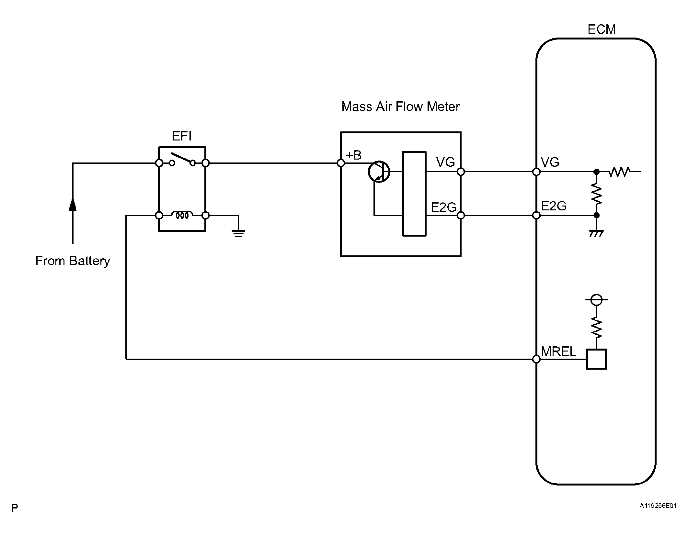

DTC P0100 Mass or Volume Air Flow Circuit; DTC P0102 Mass or Volume Air Flow Circuit Low Input; DTC P0103 Mass or Volume Air Flow Circuit High Input: Wiring Diagram
Fig 1: Identifying Mass Or Volume Air Flow Circuit Wiring Diagram

Courtesy of © TOYOTA, LICENSE AGREEMENT TMS1002